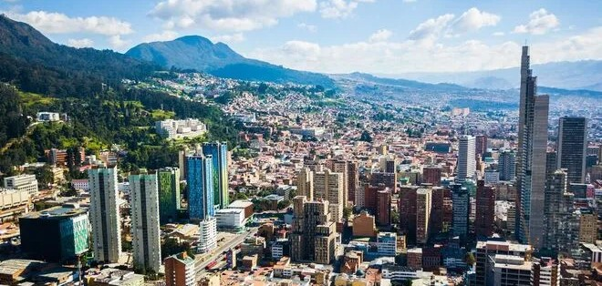

|


Avanzand2: proyectos de transformación
|
Avanzados es una empresa de venta inmobiliaria especializada en vivienda multifamiliar diseñada según sus necesidades, con una alta calidad de vida y comprometida con el medio ambiente. En Avanzados contamos con 20 años de experiencia en el mercado y gracias a nuestro compromiso hemos logrado llegar a ser una de las mejores empresas del país.
|
|
|
Nos hemos expandido desde la región Andina con proyectos en Bogotá y Sabana, Girardot, Ibagué y Villeta.

Nuestra meta
|
Liderar en proyectos urbanos, que logren la satisfacción de nuestros clientes, por lo cual contamos con un equipo de gran desempeño el cual se compromete con la sociedad y el ambiente, para asi brindar los mejores resultados a nuestros aliados y accionistas.
|
Política de calidad
|
En Avanzand2 nuestros clientes seran atendidos de forma simpática, oportuna y eficiente. Para asi ofrecerles una vivienda que se ajuste a sus necesidades.
|
|
Cumplimos nuestros objetivos respetando la norma, estandarizando, implementando y mejorando nuestros sistemas de gestión de calidad, basandose todo en una organización profesional.
| Comprometidos con nuestros clientes |
Calidad de vida |
Comprometido con el medio ambiente |
| Nuestra trayectoria se ve reflejada en nuestras viviendas. Levamos 20 años apoyando a mas de 60 mil familias a alcanzar su hogar soñado. |
Nuestros clientes disfrutan de nuestros espacios diseñados para la familia, con espacios verdes, zonas comunes y acabados exclusivos. |
Nuestros diseños son de altos estadares de calida, que nos han permitido teber distintos reconocimientos a nivel nacional |
Incio -
Nosotros -
Proyectos -
Contacto
El contenido y los vínculos de esta página
son de carácter solamente académico. Los estudiantes de la Facultad de Arquitectura,
Diseño y Urbanismo de la Universidad De La Salle, sede Bogotá, organizan la IX Feria
Inmobiliaria Virtual, como ejercicio del espacio académico Representación de Proyectos.
Las imágenes utilizadas son referentes de proyectos reales y su utilización es de índole
exclusivamente académico
|
| | |